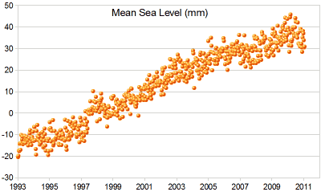
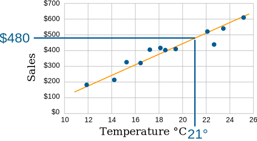
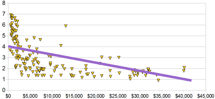

Scatter Plots

A Scatter (XY) Plot has points that show the relationship between two sets of data.
In this example, each dot shows one person's weight versus their height.
(The data is plotted on the graph as "Cartesian (x,y) Coordinates")
Example:
The local ice cream shop keeps track of how much ice cream they sell versus the noon temperature on that day. Here are their figures for the last 12 days:
| Ice Cream Sales vs Temperature | |
| Temperature °C | Ice Cream Sales |
|---|---|
| 14.2° | $215 |
| 16.4° | $325 |
| 11.9° | $185 |
| 15.2° | $332 |
| 18.5° | $406 |
| 22.1° | $522 |
| 19.4° | $412 |
| 25.1° | $614 |
| 23.4° | $544 |
| 18.1° | $421 |
| 22.6° | $445 |
| 17.2° | $408 |
And here is the same data as a Scatter Plot:

It is now easy to see that warmer weather leads to more sales, but the relationship is not perfect.
Line of Best Fit
We can also draw a "Line of Best Fit" (also called a "Trend Line") on our scatter plot:

Try to have the line as close as possible to all points, and as many points above the line as below.
But for better accuracy we can calculate the line using Least Squares Regression and the Least Squares Calculator.
Example: Sea Level Rise
A Scatter Plot of Sea Level Rise: |
 |
| And here I have drawn on a "Line of Best Fit". |  |
Interpolation and Extrapolation
Interpolation is where we find a value inside our set of data points.

Here we use linear interpolation to estimate the sales at 21 °C.
Extrapolation is where we find a value outside our set of data points.

Here we use linear extrapolation to estimate the sales at 29 °C (which is higher than any value we have).
Careful: Extrapolation can give misleading results because we are in "uncharted territory".
As well as using a graph (like above) we can create a formula to help us.
Example: Straight Line Equation
We can estimate a straight line equation from two points from the graph above
Let's estimate two points on the line near actual values: (12°, $180) and (25°, $610)
First, find the slope:
| slope "m" | = change in y change in x |
| = $610 − $180 25° − 12° | |
| = $430 13° | |
| = 33 (rounded) |
Now put the slope and the point (12°, $180) into the "point-slope" formula:
y − y1 = m(x − x1)
y − 180 = 33(x − 12)
y = 33(x − 12) + 180
y = 33x − 396 + 180
y = 33x − 216
INTERpolating
Now we can use that equation to interpolate a sales value at 21°:
y = 33×21° − 216 = $477
EXTRApolating
And to extrapolate a sales value at 29°:
y = 33×29° − 216 = $741
The values are close to what we got on the graph. But that doesn't mean they are more (or less) accurate. They are all just estimates.
Don't use extrapolation too far! What sales would you expect at 0° ?
y = 33×0° − 216 = −$216
Hmmm... Minus $216? We extrapolated too far!
Note: we used linear (based on a line) interpolation and extrapolation, but there are many other types, for example we could use polynomials to make curvy lines, etc.
Correlation
When the two sets of data are strongly linked together we say they have a High Correlation.
The word Correlation is made of Co- (meaning "together"), and Relation
- Correlation is Positive when the values increase together, and
- Correlation is Negative when one value decreases as the other increases
Like this:

(Learn More About Correlation)
Negative Correlation
Correlations can be negative, which means there is a correlation but one value goes down as the other value increases.
Example : Birth Rate vs IncomeThe birth rate tends to be lower in richer countries.
Below is a scatter plot for about 100 different countries. |
|

It has a negative correlation (the line slopes down)
Note: I tried to fit a straight line to the data, but maybe a curve would work better, what do you think?